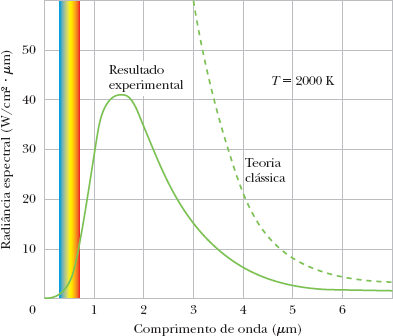
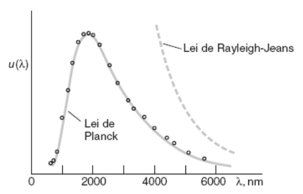

Aula 04 - Radiação do Corpo Negro
Física Moderna 1
Objetivos
Ao final desta aula, você deverá ser capaz de:
- Compreender o conceito de corpo negro como um modelo ideal para o estudo da radiação térmica.
- Analisar as leis empíricas que descrevem a radiação do corpo negro: Lei de Stefan-Boltzmann e Lei de Wien.
- Explicar o problema da “catástrofe do ultravioleta” e por que ele representou um fracasso da Física Clássica.
- Conhecer a trajetória de Max Planck e o contexto de sua descoberta revolucionária.
- Descrever a hipótese de Planck sobre a quantização da energia como a solução para o problema do corpo negro.
- Aplicar as leis da radiação de corpo negro na resolução de problemas práticos e astronômicos.
- Utilizar uma simulação computacional para verificar experimentalmente as leis de Stefan-Boltzmann e de Wien.
Introdução
Na primeira aula deste curso, conhecemos as “nuvens no céu da Física Clássica”, utilizando a metáfora de Lord Kelvin. Uma das mais escuras e ameaçadoras dessas nuvens era o problema da radiação de corpo negro. O que parecia ser um problema técnico sobre a luz emitida por objetos aquecidos se tornou o berço da Mecânica Quântica.
Imagine um ferreiro aquecendo uma peça de metal. À medida que a temperatura aumenta, o metal começa a brilhar em um vermelho opaco, depois laranja, branco e, em temperaturas altíssimas, azulado. Por que a cor muda? Como a energia se distribui nas diferentes cores (frequências) da luz emitida? A Física Clássica tinha respostas erradas para essas perguntas, levando a previsões absurdas.
Nesta aula, vamos mergulhar nesse problema. Veremos como as leis empíricas de Stefan, Boltzmann e Wien descreviam o fenômeno, mas não o explicavam em sua totalidade. Exploraremos o fracasso da teoria clássica, que culminou na famosa “catástrofe do ultravioleta”. Conheceremos a história de Max Planck, um físico conservador que, contrariando suas próprias convicções, propôs uma solução ousada. Por fim, estudaremos como a hipótese de que a energia é quantizada não apenas resolveu o enigma, mas também acendeu o pavio da revolução quântica.
A História de Max Planck: O Relutante Revolucionário
Max Karl Ernst Ludwig Planck nasceu em 1858 em Kiel, Alemanha, em uma família de tradição acadêmica. Diferentemente da imagem do cientista rebelde, Planck era um homem conservador, profundamente dedicado à música (era um pianista talentoso) e à tradição acadêmica alemã. Ele iniciou seus estudos em Física na Universidade de Munique, onde seu professor Philipp von Jolly aconselhou-o a não seguir a carreira, argumentando que “não havia muito mais o que descobrir na Física”.

Planck e a Termodinâmica
Apesar do conselho desanimador, Planck prosseguiu, fascinado pela termodinâmica e pela lei da conservação da energia. Seu doutorado, em 1879, tratou justamente sobre o conceito de entropia. Ao longo da década de 1890, Planck voltou sua atenção para o problema da radiação de corpo negro, um dos desafios mais prementes da época. O Instituto de Física Técnica de Berlim (Physikalisch-Technische Reichsanstalt) vinha realizando medidas precisas da radiação térmica, e Planck buscava uma fundamentação teórica para esses resultados.
O Ano Milagroso de 1900
Em outubro de 1900, após tomar conhecimento de novas medidas experimentais, Planck encontrou uma fórmula empírica que se ajustava perfeitamente aos dados. Era a lei que hoje leva seu nome. No entanto, essa era apenas uma fórmula matemática. Faltava uma derivação teórica que a explicasse.
Nos dois meses seguintes, Planck trabalhou intensamente para encontrar essa derivação. Foi então que, como ele mesmo descreveu, “um ato de desespero” o levou a uma hipótese que violava toda a física conhecida. Ele propôs que a energia dos osciladores responsáveis pela emissão da radiação não era contínua, mas sim composta por um número inteiro de “elementos de energia” ou quanta. A energia de cada quantum seria proporcional à frequência da radiação:
\[ E = hf \]
Onde \(h\) é uma nova constante fundamental da natureza, que hoje conhecemos como constante de Planck.
Um Revolucionário Contra a Vontade
É crucial compreender que Planck não estava tentando derrubar a física clássica. Pelo contrário, ele via a quantização como um “artifício matemático”, um recurso temporário para obter a fórmula correta. Nos anos seguintes, ele tentou, sem sucesso, reconciliar sua hipótese com a física clássica. Apenas com os trabalhos posteriores de Einstein (sobre o efeito fotoelétrico) e Bohr (sobre o átomo), ficou claro que a quantização era uma propriedade fundamental da natureza, e não um mero truque.

Por seu trabalho, Planck recebeu o Prêmio Nobel de Física em 1918. Sua vida pessoal foi marcada por tragédias: sua primeira esposa faleceu em 1909, e um de seus filhos foi executado em 1945 por envolvimento na tentativa de assassinato de Hitler. Apesar disso, Planck permaneceu na Alemanha durante a guerra, tentando preservar a ciência alemã, e faleceu em 1947, aos 89 anos. Sua história é um lembrete de que mesmo os mais conservadores podem, involuntariamente, desencadear as mais profundas revoluções.
Fundamentos Teóricos
A radiação de corpo negro é a radiação eletromagnética emitida por um objeto ideal, chamado de corpo negro, que está em equilíbrio térmico consigo mesmo.
O que é um Corpo Negro?
Um corpo negro é um objeto teórico, idealizado, com uma propriedade fundamental: ele absorve toda a radiação eletromagnética que incide sobre si, sem refletir nada. Por isso, à temperatura ambiente, ele seria perfeitamente negro.
No entanto, quando aquecido, um corpo negro se torna um emissor perfeito. A radiação que ele emite depende exclusivamente de sua temperatura, e não do material de que é feito. Essa universalidade é o que torna o estudo do corpo negro tão poderoso para a Física.
Na prática, podemos nos aproximar desse comportamento ideal com uma cavidade mantida a uma temperatura uniforme, com um pequeno orifício. A radiação que entra pelo orifício tem chance ínfima de escapar, sendo absorvida pelas paredes. A radiação que sai pelo orifício é uma amostra perfeita da radiação interna da cavidade, que está em equilíbrio térmico com as paredes.

Leis Empíricas da Radiação de Corpo Negro
Antes de uma explicação teórica completa, os físicos já haviam deduzido, a partir de dados experimentais, duas leis importantes que descreviam o comportamento da radiação.
Lei de Stefan-Boltzmann
Esta lei relaciona a potência total irradiada por um corpo negro com a sua temperatura.
Enunciado: A potência total irradiada por unidade de área (intensidade \(I\)) de um corpo negro é diretamente proporcional à quarta potência de sua temperatura absoluta \(T\).
Fórmula: \[ I = \sigma T^4 \]
Onde a intensidade \(I\) é a potência emitida por metro quadrado (\(W/m^2\)) e \(\sigma\) é a constante de Stefan-Boltzmann:
\[ \sigma = 5{,}670 \times 10^{-8} \, \text{W}/(\text{m}^2\text{K}^4) \]
Para um corpo real, que não é um emissor perfeito, a fórmula se torna \(I = \epsilon \sigma T^4\), onde \(\epsilon\) é a emissividade (\(0 < \epsilon \le 1\)).
Lei de Wien
Esta lei descreve como a cor (o comprimento de onda) da radiação mais intensa emitida por um corpo negro varia com a temperatura.
Enunciado: O comprimento de onda \(\lambda_{\text{máx}}\) no qual a emissão de radiação é máxima é inversamente proporcional à temperatura absoluta \(T\) do corpo negro.
Fórmula: \[ \lambda_{\text{máx}} = \frac{b}{T} \]
Onde \(b\) é a constante da lei de Wien:
\[b = 2{,}898 \times 10^{-3} \, \text{m}\,\text{K}\] Ou, como o comprimento de onda é frequentemente dado em nanômetros (nm): \[b = 2{,}898 \times 10^{6} \, \text{nm}\,\text{K}\]
É por isso que um objeto mais frio (como uma estrela vermelha) tem seu pico de emissão em comprimentos de onda maiores (luz vermelha ou infravermelho), e um objeto mais quente (como uma estrela azul) tem seu pico em comprimentos de onda menores (luz azul ou ultravioleta).
A Crise Clássica: A Catástrofe do Ultravioleta
O grande desafio era explicar teoricamente a forma da curva de distribuição espectral da radiação (intensidade vs. comprimento de onda ou frequência). Os físicos tentaram deduzir essa curva usando a Física Clássica.
A teoria clássica, que tratava a radiação como ondas e os átomos das paredes da cavidade como osciladores harmônicos com energia contínua, levou à Lei de Rayleigh-Jeans:
\[ u(\lambda) = 8\pi k T \lambda^{-4} \]
Onde \(u(\lambda)\) é a densidade de energia por unidade de volume e comprimento de onda, e \(k = 1{,}381 \times 10^{-23}\,\text{J/K}\) é a constante de Boltzmann.
O Problema:
- Para comprimentos de onda longos (\(\lambda\) grande), a fórmula concordava razoavelmente com os dados experimentais.
- Para comprimentos de onda curtos (\(\lambda\) pequeno, na região do ultravioleta), a fórmula previa que a densidade de energia tendia ao infinito (\(\lim_{\lambda \to 0} u(\lambda) = \infty\)).
Essa previsão absurda, de que um corpo à temperatura ambiente emitiria uma quantidade infinita de energia na forma de radiação ultravioleta, ficou conhecida como a “catástrofe do ultravioleta”. Ela deixava claro que a Física Clássica havia falhado espetacularmente.

A Solução Quântica: A Hipótese de Planck
Em 1900, Max Planck apresentou uma solução que, embora o incomodasse profundamente, resolveria o problema e mudaria a Física para sempre.
Planck propôs uma ideia revolucionária: a energia dos osciladores atômicos nas paredes da cavidade (e, portanto, da radiação que eles emitem) não é contínua, mas sim quantizada. Ela só pode existir em pacotes discretos, que ele chamou de quanta.
A energia de cada “quantum” é proporcional à frequência da radiação:
\[ E = hf \]
onde \(f\) é a frequência da radiação e \(h\) é uma nova constante fundamental da natureza, a constante de Planck:
\[h = 6{,}626 \times 10^{-34} \, \text{J}\,\text{s}\]
A partir dessa hipótese, Planck derivou uma nova fórmula para a distribuição espectral da radiação de corpo negro, que hoje conhecemos como a Lei de Planck:
\[ u(\lambda) = \dfrac{8\pi h c \lambda^{-5}}{e^{hc/(\lambda k T)} - 1} \]
Que também pode ser escrita em termos da frequência \(f\):
\[u(f) = \frac{8\pi h f^3}{c^3} \frac{1}{e^{hf/(kT)} - 1}\]
Esta forma é particularmente útil quando se trabalha com espectroscopia e física de radiação.
Ao contrário da lei clássica, a lei de Planck:
- Concordava perfeitamente com os dados experimentais em todas as faixas de comprimento de onda.
- Resolvia a catástrofe do ultravioleta, pois para \(\lambda \to 0\), a função também tende a zero (\(\lim_{\lambda \to 0} u(\lambda) = 0\)).
- Para comprimentos de onda longos, a fórmula de Planck se reduz à lei de Rayleigh-Jeans, mostrando que a teoria clássica era uma aproximação válida em baixas frequências.
Planck havia introduzido o conceito de quantização da energia, um dos pilares fundamentais da Física Quântica, marcando o fim da hegemonia da visão clássica.

A Lei de Wien pode ser obtida encontrando o máximo da função \(u(\lambda)\) da Lei de Planck. Derivando \(u(\lambda)\) em relação a \(\lambda\) e igualando a zero, obtém-se a equação transcendental:
\[5(1 - e^{-x}) = x, \quad \text{onde} \quad x = \frac{hc}{\lambda_{\text{máx}} k T}\]
A solução numérica desta equação é \(x \approx 4{,}965\), o que leva a:
\[\lambda_{\text{máx}} T = \frac{hc}{x k} = b\]
Substituindo os valores das constantes fundamentais:
\[b = \frac{(6{,}626 \times 10^{-34})(2{,}998 \times 10^8)}{(4{,}965)(1{,}381 \times 10^{-23})} = 2{,}898 \times 10^{-3}\,\text{m}\,{K}\]
Este é o valor da constante de Wien, que utilizaremos nos problemas.
Exemplos Resolvidos
Exemplo 4.1: Determinando a Temperatura de uma Estrela
Uma estrela distante tem seu pico de emissão de radiação em \(\lambda_{\text{máx}} = 400 \, \text{nm}\), que corresponde à cor violeta. Considerando que ela se comporta como um corpo negro, qual é a temperatura aproximada de sua superfície?
Solução:
Este é um problema de aplicação direta da Lei de Wien. A fórmula que relaciona o comprimento de onda de pico com a temperatura é:
\[T = \frac{b}{\lambda_{\text{máx}}}\]
Passo 1: Identificar as constantes e os dados. - Comprimento de onda de pico: \(\lambda_{\text{máx}} = 400 \, \text{nm}\). - Constante de Wien: \(b = 2{,}898 \times 10^6 \, \text{nm·K}\) (usaremos esta forma para evitar conversões desnecessárias).
Passo 2: Substituir os valores na fórmula. \[T = \frac{2{,}898 \times 10^6 \, \text{nm·K}}{400 \, \text{nm}}\]
Passo 3: Realizar o cálculo. \[T = \frac{2{,}898 \times 10^6}{4{,}00 \times 10^2} \, \text{K}\] \[T = 7{,}245 \times 10^3 \, \text{K}\]
Passo 4: Expressar o resultado com notação adequada. \[\boxed{T = 7245 \, \text{K}}\]
Interpretação: A temperatura superficial dessa estrela é de aproximadamente 7245 K, o que a coloca na classe de estrelas mais quentes que o Sol (que tem cerca de 5800 K).
Exemplo 4.2: Comparando a Potência Irradiada por Duas Estrelas
Duas estrelas, A e B, são esféricas e possuem o mesmo raio \(R\). A estrela A tem temperatura superficial \(T_A = 3000 \, \text{K}\) (avermelhada) e a estrela B tem temperatura \(T_B = 6000 \, \text{K}\) (amarelada, como o Sol). Calcule a razão entre a potência total irradiada pela estrela B e pela estrela A, ou seja, determine \(P_B / P_A\).
Solução:
Para resolver este problema, precisamos combinar a Lei de Stefan-Boltzmann com a geometria esférica das estrelas.
Passo 1: Lembrar das fórmulas fundamentais. - A Lei de Stefan-Boltzmann para a intensidade (potência por unidade de área) é: \(I = \sigma T^4\). - A potência total \(P\) irradiada por uma esfera de raio \(R\) é a intensidade multiplicada pela área da superfície da esfera: \(P = I \cdot A = (\sigma T^4) \cdot (4\pi R^2)\).
Passo 2: Escrever a expressão para a potência de cada estrela. Para a estrela A: \(P_A = 4\pi R_A^2 \sigma T_A^4\) Para a estrela B: \(P_B = 4\pi R_B^2 \sigma T_B^4\)
Passo 3: Calcular a razão pedida. \[\frac{P_B}{P_A} = \frac{4\pi R_B^2 \sigma T_B^4}{4\pi R_A^2 \sigma T_A^4}\]
Passo 4: Simplificar a expressão. Como o raio é o mesmo para ambas (\(R_A = R_B = R\)) e a constante \(\sigma\) e o fator \(4\pi\) são comuns, eles se cancelam: \[\frac{P_B}{P_A} = \left( \frac{T_B}{T_A} \right)^4\]
Passo 5: Substituir os valores das temperaturas. \[\frac{P_B}{P_A} = \left( \frac{6000 \, \text{K}}{3000 \, \text{K}} \right)^4 = (2)^4 = 16\]
Passo 6: Apresentar o resultado. \[\boxed{\frac{P_B}{P_A} = 16}\]
Interpretação: A estrela B, por ser duas vezes mais quente que a estrela A, irradia 16 vezes mais energia por segundo. Este exemplo demonstra o poder da lei \(T^4\) de Stefan-Boltzmann: um pequeno aumento na temperatura leva a um enorme aumento na potência irradiada.
Exemplo 4.3: Aplicação na Indústria - Um Forno Industrial
Um forno industrial opera a uma temperatura de \(2000 \, \text{K}\). Considerando seu interior como uma cavidade de corpo negro, determine:
- A intensidade da radiação emitida pelo orifício de inspeção do forno.
- O comprimento de onda no qual a emissão é máxima.
Solução:
Passo 1: Identificar os dados. - Temperatura do forno: \(T = 2000 \, \text{K}\) - Constante de Stefan-Boltzmann: \(\sigma = 5{,}670 \times 10^{-8} \, \text{W}/(\text{m}^2\,\text{K}^4)\) - Constante de Wien: \(b = 2{,}898 \times 10^{-3} \, \text{m}\,\text{K}\)
Passo 2: Resolver o item (a) - Intensidade da radiação. Usamos a Lei de Stefan-Boltzmann: \(I = \sigma T^4\). \[I = (5{,}670 \times 10^{-8}) \times (2000)^4\] Primeiro, calculamos \(T^4 = (2{,}000 \times 10^3)^4 = 16{,}00 \times 10^{12} = 1{,}600 \times 10^{13} \, \text{K}^4\). Agora, multiplicamos: \[I = 5{,}670 \times 10^{-8} \times 1{,}600 \times 10^{13}\] \[I = (5{,}670 \times 1{,}600) \times 10^{-8+13}\] \[I = 9{,}072 \times 10^{5} \, \text{W}/\text{m}^2\] Podemos escrever em notação mais compacta: \[\boxed{I = 9{,}07 \times 10^{5} \, \text{W}/\text{m}^2}\]
Passo 3: Resolver o item (b) - Comprimento de onda de pico. Usamos a Lei de Wien: \(\lambda_{\text{máx}} = \frac{b}{T}\). \[\lambda_{\text{máx}} = \frac{2{,}898 \times 10^{-3} \, \text{m}\,\text{K}}{2000 \, \text{K}}\] \[\lambda_{\text{máx}} = 1{,}449 \times 10^{-6} \, \text{m}\]
Passo 4: Converter para uma unidade mais adequada. O valor obtido está em metros. É comum expressar comprimentos de onda nessa faixa em micrômetros (\(\mu m\)), onde \(1 \, \mu m = 10^{-6} \, m\). \[\lambda_{\text{máx}} = 1{,}449 \, \mu \text{m}\]
Passo 5: Apresentar o resultado final. \[\boxed{\lambda_{\text{máx}} = 1{,}45 \, \mu \text{m}}\]
Interpretação: A intensidade da radiação é de cerca de \(907 \, \text{kW}/\text{m}^2\), e a radiação é máxima na região do infravermelho próximo (\(1{,}45 \, \mu \text{m}\)), que não é visível ao olho humano. Por isso, o orifício do forno brilha com uma cor vermelho-alaranjada (parte da cauda da curva que ainda atinge o visível), mas a maior parte da energia está no infravermelho.
Conclusão
A radiação de corpo negro foi muito mais do que um simples fenômeno a ser explicado; foi o campo de batalha onde a Física Clássica encontrou seu limite e onde a Física Quântica deu seus primeiros passos.
- As leis empíricas de Stefan-Boltzmann e Wien forneceram as peças do quebra-cabeça, mas foi a catástrofe do ultravioleta que expôs a fragilidade da visão clássica.
- A história de Max Planck nos mostra que a ciência avança não apenas por meio de rebeldes, mas também por estudiosos conservadores que, ao tentar resolver um problema específico, são levados a conclusões revolucionárias, muitas vezes contra sua própria vontade.
- A solução de Planck, ao introduzir a ideia de que a energia é quantizada (\(E = hf\)), não apenas resolveu o problema teórico, mas também abriu as portas para uma nova compreensão da realidade.
- O conceito de que a energia não é contínua, mas trocada em “pacotes” discretos, foi o primeiro e mais crucial passo em direção à Mecânica Quântica.
Na história da ciência, a radiação de corpo negro permanece como um exemplo brilhante de como a persistência de um problema experimental, quando confrontada com a ousadia teórica, pode levar a uma mudança de paradigma e revolucionar nosso entendimento do universo.
Na próxima aula, daremos mais um passo nessa revolução: estudaremos o efeito fotoelétrico, fenômeno que Einstein explicou em 1905 utilizando a hipótese dos quanta de luz (fótons), consolidando definitivamente a ideia da quantização da energia e rendendo-lhe o Prêmio Nobel de Física em 1921.
Exercícios de Fixação
- 4.1)
- Sobre o conceito de corpo negro, é correto afirmar que:
- É um objeto que reflete toda a radiação incidente, por isso parece negro.
- É um objeto cuja radiação emitida depende do material de que é feito.
- É um objeto ideal que absorve toda a radiação incidente e cuja emissão depende apenas de sua temperatura.
- É um objeto que só pode ser encontrado na natureza, como o carbono.
- É um objeto que não emite radiação, apenas absorve.
- 4.2)
- A Lei de Stefan-Boltzmann estabelece que a intensidade total da radiação emitida por um corpo negro é:
- Diretamente proporcional à sua temperatura.
- Inversamente proporcional à sua temperatura.
- Diretamente proporcional ao quadrado de sua temperatura.
- Diretamente proporcional à quarta potência de sua temperatura.
- Inversamente proporcional à quarta potência de sua temperatura.
- 4.3)
- A estrela Betelgeuse, na constelação de Órion, tem coloração avermelhada, enquanto a estrela Sirius, na constelação do Cão Maior, tem coloração azulada. Com base na Lei de Wien, o que se pode afirmar sobre as temperaturas superficiais dessas estrelas?
- Betelgeuse é mais quente que Sirius.
- Sirius é mais quente que Betelgeuse.
- Ambas têm a mesma temperatura.
- Não é possível relacionar cor com temperatura.
- Betelgeuse não emite radiação de corpo negro.
- 4.4)
- O problema da “catástrofe do ultravioleta” na Física Clássica referia-se à previsão de que:
- A densidade de energia da radiação tenderia ao infinito para comprimentos de onda muito curtos.
- A densidade de energia da radiação tenderia ao infinito para comprimentos de onda muito longos.
- A energia total irradiada por um corpo negro seria zero.
- A cor da radiação emitida seria sempre a mesma, independentemente da temperatura.
- Não haveria radiação emitida em altas temperaturas.
- 4.5)
- A hipótese quântica de Planck para resolver o problema do corpo negro propunha que:
- A luz se comporta exclusivamente como uma onda.
- A energia dos osciladores atômicos é contínua.
- O átomo era indivisível e não tinha estrutura interna.
- A velocidade da luz não é constante.
- A energia só pode ser emitida ou absorvida em pacotes discretos, chamados quanta, cuja energia é \(E = hf\).
Instruções gerais para as questões de 4.6 a 4.10:
Para estas questões, você deverá acessar a simulação “Blackbody Spectrum” disponível no site de simulações interativas da Universidade do Colorado (PhET), através do seguinte link:
Link para a simulação: https://phet.colorado.edu/pt_BR/simulations/blackbody-spectrum
Ao abrir a simulação, familiarize-se com a interface. Você verá um gráfico da intensidade da radiação em função do comprimento de onda, para diferentes temperaturas. Utilize o controle deslizante para ajustar a temperatura do corpo negro. Ative as opções “valores”, “rótulos” e “intensidade” para facilitar suas leituras.
Observação sobre algarismos significativos: Ao registrar suas medidas e realizar os cálculos, mantenha o número de algarismos significativos coerente com a precisão da simulação. A simulação do PhET geralmente fornece valores com 3 ou 4 algarismos significativos. Mantenha essa precisão em suas tabelas e cálculos.
Para a análise gráfica, você utilizará o site Curve.fit (https://curve.fit/), que permite realizar regressões não-lineares de forma simples com diversos modelos pré-definidos. Para cada conjunto de dados, você deverá inserir os valores de x e y, suas respectivas incertezas (que consideraremos como 1% do valor medido), e selecionar o modelo de regressão adequado para determinar as constantes experimentais.
- 4.6)
- Coleta de Dados - Lei de Stefan-Boltzmann. Na simulação, posicione o marcador de temperatura nos seguintes valores: 2500 K, 3000 K, 3500 K, 4000 K, 4500 K, 5000 K, 5500 K, 6000 K, 6500 K e 7000 K.
Para cada uma dessas temperaturas, observe e anote o valor da intensidade da radiação (\(I\)) que é mostrado na simulação. Organize esses dados em uma tabela com as seguintes colunas em seu caderno de laboratório:
- Temperatura \(T\) (em K).
- Incerteza da Temperatura \(\Delta T\) (em K) - considere \(\Delta T = 0{,}01 \times T\) (1% do valor).
- Intensidade \(I\) (em MW/m²).
- Incerteza da Intensidade \(\Delta I\) (em \(\text{MW}/\text{m}^{2}\)) - considere \(\Delta I = 0{,}01 \times I\) (1% do valor).
Lembre-se de que 1 MW/m² = \(10^6\) W/m².
- 4.7)
- Análise Gráfica e Determinação da Constante de Stefan-Boltzmann. Com os dados da tabela da questão anterior, você irá determinar a constante de Stefan-Boltzmann \(\sigma\) utilizando o site Curve.fit.
Passo a passo:
- Acesse o site https://curve.fit/.
- No campo x values, insira os valores da Temperatura \(T\) (em K).
- No campo x error, insira os valores da incerteza \(\Delta T\) (em K).
- No campo y values, insira os valores da Intensidade \(I\) (em \(\text{MW}/\text{m}^{2}\)).
- No campo y error, insira os valores da incerteza \(\Delta I\) (em \(\text{MW}/\text{m}^{2}\)).
A Lei de Stefan-Boltzmann prevê uma relação do tipo \(I = \sigma T^4\), ou seja, a intensidade é proporcional à potência 4 da temperatura. Esta é uma lei de potência (power law) do tipo \(y = A x^B\), onde esperamos que o expoente \(B\) seja igual a 4.
Na lista de modelos do Curve.fit, selecione a opção “Power Law”, que corresponde à função: \[y = A x^B\] onde \(A\) e \(B\) são os parâmetros a serem determinados pela regressão.
Execute o ajuste e observe os valores obtidos para os parâmetros:
- O parâmetro \(A\) corresponde à constante de Stefan-Boltzmann \(\sigma\) nas unidades do seu gráfico (\(\text{MW}/(\text{m}^{2}\,\text{K}^{4})\)).
- O parâmetro \(B\) é o expoente da lei de potência. De acordo com a teoria, ele deve ser igual a 4.
Perguntas:
- Anote os valores obtidos para \(A\) e \(B\) com suas respectivas incertezas.
- O valor do expoente \(B\) está próximo de 4? Calcule o erro percentual em relação ao valor teórico esperado (\(B_{\text{teórico}} = 4\)). O que isso indica sobre a validade da Lei de Stefan-Boltzmann?
- O parâmetro \(A\) obtido na regressão está nas unidades \(\text{MW}/(\text{m}^{2}\,\text{K}^{4})\). Para convertê-lo para as unidades do SI (\(\text{W}/(\text{m}^{2}\,\text{K}^{4})\)), multiplique o valor por \(10^6\), pois:
\[1 \, \frac{\text{MW}}{\text{m}^2\,\text{K}^4} = 10^6 \, \frac{\text{W}}{\text{m}^2\,\text{K}^4}\]
Este é o seu valor experimental para a constante de Stefan-Boltzmann, \(\sigma_{\text{exp}}\), em \(\text{W}/(\text{m}^{2}\,\text{K}^{4})\).
- 4.8)
- Coleta de Dados - Lei de Wien. Na simulação, utilize novamente o controle deslizante para ajustar a temperatura do corpo negro para os mesmos valores do experimento anterior: 2500 K, 3000 K, 3500 K, 4000 K, 4500 K, 5000 K, 5500 K, 6000 K, 6500 K e 7000 K.
Para cada temperatura, observe a curva no gráfico e identifique o ponto mais alto (o pico). Leia e anote o valor do comprimento de onda correspondente a esse pico (\(\lambda_{\text{máx}}\)). Organize esses dados em uma tabela com as seguintes colunas em seu caderno de laboratório:
- Temperatura \(T\) (em K).
- Incerteza da Temperatura \(\Delta T\) (em K) - considere \(\Delta T = 0{,}01 \times T\) (1% do valor).
- Comprimento de Onda de Pico \(\lambda_{\text{máx}}\) (em nm).
- Incerteza do Comprimento de Onda \(\Delta \lambda_{\text{máx}}\) (em nm) - considere \(\Delta \lambda = 0{,}01 \times \lambda_{\text{máx}}\) (1% do valor).
- 4.9)
- Análise Gráfica e Determinação da Constante de Wien. Com os dados da tabela da questão anterior, você irá determinar a constante da Lei de Wien \(b\) utilizando o site Curve.fit.
Passo a passo:
- Acesse o site https://curve.fit/.
- No campo x values, insira os valores da Temperatura \(T\) (em K).
- No campo x error, insira os valores da incerteza \(\Delta T\) (em K).
- No campo y values, insira os valores do Comprimento de Onda de Pico \(\lambda_{\text{máx}}\) (em nm).
- No campo y error, insira os valores da incerteza \(\Delta \lambda_{\text{máx}}\) (em nm).
A Lei de Wien prevê uma relação do tipo \(\lambda_{\text{máx}} = b/T\), ou seja, o comprimento de onda de pico é inversamente proporcional à temperatura. O Curve.fit possui um modelo específico para este tipo de relação.
Na lista de modelos do Curve.fit, selecione a opção “Inverse”, que corresponde à função: \[y = \frac{A}{x} + B\] onde \(A\) e \(B\) são os parâmetros a serem determinados pela regressão. O parâmetro \(B\) é uma constante aditiva, que idealmente deve ser zero para que a lei se verifique.
Execute o ajuste e observe os valores obtidos para os parâmetros:
- O parâmetro \(A\) corresponde à constante de Wien \(b\) nas unidades do seu gráfico (\(\text{nm}\,\text{K}\)).
- O parâmetro \(B\) é uma constante aditiva. De acordo com a teoria, ele deve ser igual a zero (ou muito próximo de zero).
Perguntas:
- Anote os valores obtidos para \(A\) e \(B\) com suas respectivas incertezas.
- O valor do parâmetro \(B\) está próximo de zero? O que isso indica sobre a adequação do modelo \(y = A/x\) para descrever seus dados?
- Converta o valor do parâmetro \(A\) (que é o \(b_{\text{exp}}\) nas unidades do gráfico) para as unidades do SI (\(\text{m}\,\text{K}\)), lembrando que 1 nm = \(10^{-9}\) m. Este é o seu valor experimental para a constante de Wien, \(b_{\text{exp}}\).
- 4.10)
- Comparação com os Valores Teóricos e Análise dos Resultados. Compare os valores experimentais que você obteve para a constante de Stefan-Boltzmann (\(\sigma_{\text{exp}}\)) e para a constante de Wien (\(b_{\text{exp}}\)) com os valores aceitos na literatura:
- \(\sigma_{\text{teórico}} = 5{,}670 \times 10^{-8} \, \text{W}/(\text{m}^2\,\text{K}^4)\).
- \(b_{\text{teórico}} = 2{,}898 \times 10^{-3} \, \text{m}\,\text{K}\).
Para cada constante, calcule o erro percentual do seu valor experimental em relação ao valor teórico, utilizando a fórmula:
\[\text{Erro \%} = \left| \frac{v_{\text{teórico}} - v_{\text{experimental}}}{v_{\text{teórico}}} \right| \times 100\%\]
Perguntas para discussão:
- Considerando os erros experimentais de 1% e o método de regressão utilizado com os modelos “Power Law” e “Inverse”, seus resultados foram satisfatórios? Os valores dos parâmetros secundários (\(B\) na lei de potência e \(B\) no modelo inverso) ficaram próximos dos valores esperados pela teoria?
- Na questão 4.7, qual a vantagem de utilizar o modelo “Power Law” (\(y = A x^B\)) em vez de forçar um polinômio de 4º grau? Como a obtenção do expoente \(B\) ajuda a verificar a Lei de Stefan-Boltzmann de forma mais direta?
- Na questão 4.9, por que a presença de um parâmetro \(B\) (constante aditiva) diferente de zero no modelo “Inverse” poderia indicar um problema sistemático nas suas medidas ou na própria simulação?
- Com base na precisão da simulação e na análise dos erros e dos parâmetros dos ajustes, o que você conclui sobre a validade das leis de Stefan-Boltzmann e de Wien para descrever a radiação de corpo negro?
Respostas
Caro estudante, seguem as respostas completas e detalhadas dos exercícios de fixação da aula anterior.
Recomendações
Referências
- ANTUNES, Laura Catarina Seco. Radiação de corpo negro: lei de Stefan-Boltzmann, lei do deslocamento de Wien. 2012. Relatório de Estágio (Mestrado em Ensino de Física e Química) – Universidade da Beira Interior, Covilhã, 2012.
- CURVE.FIT. Ferramenta online para regressão e ajuste de curvas. Disponível em: https://curve.fit/. Acesso em: 17 mar. 2026.
- EISBERG, Robert; RESNICK, Robert. Física quântica: átomos, moléculas, sólidos, núcleos e partículas. Rio de Janeiro: Campus, 1979.
- HALLIDAY, David; RESNICK, Robert; WALKER, Jearl. Fundamentos de Física: óptica e física moderna. 10. ed. Rio de Janeiro: LTC, 2016. v. 4.
- NUSSENZVEIG, Herch Moysés. Curso de Física Básica: ótica, relatividade, física quântica. 2. ed. São Paulo: Blucher, 2014. v. 4.
- PHET SIMULAÇÕES INTERATIVAS. Blackbody Spectrum. Boulder: Universidade do Colorado. Disponível em: https://phet.colorado.edu/pt_BR/simulations/blackbody-spectrum. Acesso em: 17 mar. 2026.
- PLANCK, Max. Scientific autobiography and other papers. Nova York: Philosophical Library, 1949.
- TIPLER, Paul A.; LLEWELLYN, Ralph A. Física moderna. 6. ed. Rio de Janeiro: LTC, 2017.
- WIKIPÉDIA. Max Planck. Disponível em: https://pt.wikipedia.org/wiki/Max_Planck. Acesso em: 17 mar. 2026.
- YOUNG, Hugh D.; FREEDMAN, Roger A. Física IV: ótica e física moderna. 14. ed. São Paulo: Addison Wesley, 2016.